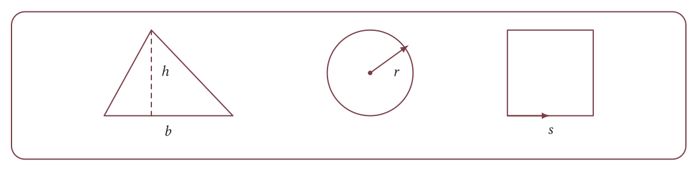
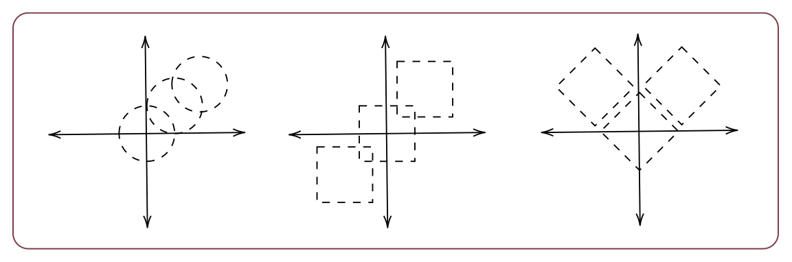

The Feminine Pursuit: Mathematics and Literature
2026-10-17
For as long as I can remember, I have had breakfast with a book in my hand. It started with my father feeding me porridge in the morning, as my hands clutched around the sparkly, hard-bound, pink spine of “Barbie Storybook Collection”, eyes glittering as I gulped down every magical sentence along with that cold porridge (the only way I would eat it). Soon, I learned the careful manoeuvre of balancing a fork in one hand, stabbing at eggs, as I held paperbacks open with my other hand. My father, growing increasingly alarmed by the rate at which I finished reading books (faster than I ate breakfast), tried to sway me with a pastime he deemed more productive— \(100\) Challenging Maths Word Problems by Joylynn Cheng.
The book was as thick as The Little Princess by Frances Hodgson Burnett, each page containing a single problem statement, the rest left blank. Begrudgingly, I put down the fork, picking up a pencil instead and peering down at the anomaly that lay in front. The first problem took a while to translate, and even longer to solve it correctly. The second took the whole day, and the third even more. But, just as I couldn’t put Johanna Spyri’s Heidi down once I had picked it up, by the time I had put the fork down on the \(100^{th}\) problem, summer had cooled into autumn.
Not all mathematics I learned was interesting to me, and neither were all the stories I read. School continued to bore me throughout much of my early teens. I wrote profusely— behind textbooks, on scrap pages, and finally, on my laptop. The first poem I ever wrote was when I was \(10\), right after I saw a classmate of mine write a poem, promptly realising the possibility of writing something of my own. I did not write because I had something to say, I wrote because it opened endless possibilities. I was not restricted by the colours on my palette, or the dimensions of my body. I wrote because it blossomed hope within me. This feeling of wonder is scarce, and as I sat in walled classrooms, legs caged by the length of my skirt, I held onto that pencil, my words and the infinite.
It was not until I started my university degree in Mathematics that I found that emotion of wonder again. I know most people, including me, were not the biggest fan of the subject in school. I studied it out of compulsion. But it was only when I stumbled onto my first Calculus course, did I realise, the fork was back in my hand, inching me to put it down. I won’t hide behind the tools of usual writing, which will only give a shallow projection of what I want to show you— wonder.
Before I begin, however, I want you to open your heart. Forget about all you might know of mathematics, of all the squashed statistics and fraud formulae. This is about hope, of all the universe we are yet to see, of all the wonder we are left to find.
Let \(X\) be a metric space.
I know, I know: What is a metric space? What does one mean by space? Empty space? An empty room with metrics? Metrics to measure what?
A metric space, say \(X\), is a set of elements, equipped with a metric. A metric gives us a notion of a “distance”.
Okay, I am being a little soft. A metric doesn’t just give us a notion of distance, it formalises what distance means. What is the distance from Paris to Mumbai? Well, one could measure that with,say, a tape measure or a plastic ruler, or other sophisticated tools.
The notion of distance seems quite intuitive and fundamental to our physical world. It is useful, and frankly, we probably wouldn’t be able to go to most places without having a GPS comparing distances and calculating the fastest route. However, these notions are boring to me. They might be important, but as writers, and as poets, we are not here to look at effective tools of measurement. So, here’s how it starts, just like that poem that formed around the confines of walls, the words that slipped through the stone cracks, blossoming out with every rebellious weed, it starts with— what if?
What if? What if I took that leap? What if I rolled up my sleeves, and finally wrote this essay? What if I fell? What if I flew? What if we had no distance at all?
What?
No distance? What does that even mean? What is distance?
Let \((X,d)\) be a metric space. \(d\) takes in two elements from our set \(X\) and outputs a single number, or equivalently, \[d : X \times X \to \mathbb{R}_{\geq 0}\] such that, for any points (one can label them \(x, y, z\)) in \(X\), it satisfies the following properties:
\(d(x,y) \geq 0\) and \(d(x,y) = 0\) if and only if \(x=y\)
\(d(x,y) = d(y,x)\)
\(d(x,z) \leq d(x,y) + d(y,z)\)
You don’t need to understand what any of those symbols or strings of words mean. But do grant me the liberty to show you what it looks like— on paper, in your hands, in front of your eyes. Mathematics must be seen as much as it begs to be understood. Let it fill your gaze, flow through your lungs and out in the world.
Back to our what if: we now have a precise way to say a “space with no distance". Simply put, a space without the above metric defined on it. But what does that look like?
Think of any shape from your middle school geometry, how would you describe it? Let us illustrate a few examples.

Each of these basic shapes that make up more complex ones is described with the aid of “length" or “distance". How does a space without a metric ascribe any geometry?
Let \((X, \tau)\) be a topological space, where \(X\) is a set with a topology \(\tau\) which is a set of subsets of \(X\) with the following properties:
the empty set, denoted as \(\phi\), and the whole set \(X\) are both contained in \(\tau\),
if a collection of subsets \(U_i\) (indexed by some \(i\)) belongs to \(\tau\), then an arbitrary union of these \(U_i\)’s is also contained in \(\tau\),
and their finite intersection also resides in \(\tau\).
The above definition does not seem so intuitive right away, and of course, as it is with any piece of poetry or literary text, you need not understand or remember every local detail to feel and see the bigger picture.
Upon further inspection of what this “topology” does to a space— a piece of paper, your bedroom, or something even more mysterious— we will soon find that the world without a metric is not as bleak as it may sound.
Firstly, let us examine what some elements of a topology can look like in some specific spaces.

The elements of a topology are called open sets. These open sets are defined without any distance but a notion of “closeness”. In fact, any topology regardless of what set it accompanies, preserves many valuable assets of our space. We might not have numerical metrics, but we can still have ideas of closeness, continuity, compactness and connectedness.
These ideas have precise mathematical definitions, but at their core, these are human notions. Notions that live with us, deeper than numerical calulations and empirical methods— mathematical ideas are innately human ideas. They cannot be separated from notions that articulate poetry, stories and the rest of our imaginative literature.
When we asked the dangerous question of what if we had to live without this seemingly fundamental thing, we assumed our life blossoms because of all these seemingly fundamental things. But once you start dropping these one by one, mathematics shows you life is much more than what we think it is. There is always hope and beauty to be found, even after all that takes from us. The wonder of it all!
When I started doing mathematics at university, this feeling of wonder thrummed as a constant stream of curiosity and hope. As a writer, mathematics remains poetic in its movements and human in its endeavour.
The dominance of males in Mathematics has not left it unmarked. The culture around it remains to honour the cold perfection that stood in contrast to its raw, unquestionably human notions. One of the things central to mathematics in society is the bubble of fear and intimidation around it, and the more I read textbooks written by many male authors, their exposition of mathematics more often than not has only seemed to further it. As the only female mathematics undergraduate in most of my classes and circles, I still hesitate to bring these glaring issues up, but to you, I bare myself naked. In writing, my first disobedient essay, I find myself finally hearing my voice.
The masculine culture of Mathematics shows up as the antagonist— the fast-paced, output-driven madness engulfs us all— as more and more thesis defences rely on intimidating the student, tests made to discourage creativity and the vigour of speed barked at anyone trying to make an attempt at understanding the vastness of it.
Maryam Mirzakhani, the first woman to win the Fields Medal (the highest award in the field of Mathematics), grew up in Iran during the \(1980\)s and \(1990\)s. She came to Harvard in \(1991\), a woman with sharp eyes and a soft smile, and pursued her dream of mathematics. The swarm of men in mathematics standing in front of blackboards waving their chalks around did not instill respect nor charm. She was famously seen crouching on the floor, with large sheets of paper, drawing away! That’s how she thought, and her ideas changed mathematics forever.
The male systems of mathematics often leave a bad taste in our mouth. Evident from the lack of poets in mathematics, and the fear in most people’s eyes when I bring up the subject, the beauty of it all silently rots as we continue to lose people, their ideas and humanity to our stupid systems. Yes, stupid.
As I write this, I glance around and find a copy of Françoise Sagan’s Bonjour Tristesse, a novella written in the \(1950\)s that holds the young feminine in unabashed honesty— through virtue and sin, it gives femininity the chance and space to simply, be. Right beside it lies my fresh print of Clara Löh’s notes on Algebraic Topology, a compilation of her teachings that holds the reader with grace, and captures the essence of empathy, precision and wonder of mathematics. As I write this, I hold onto these women a little tighter.
After breakfast, I get ready knowing that the frills of my skirt inspire the ideas of hyperbolic surfaces. I plot my face with the precise lines of a cat-eye, finding in those motions an echo of differential geometry. Finally, I slip on a pair of kitten heels, knowing that the topology of my thoughts, my language and emotions are what I shall honour in both my literary and mathematical poetry.